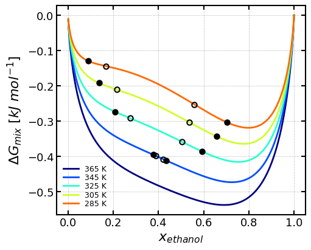
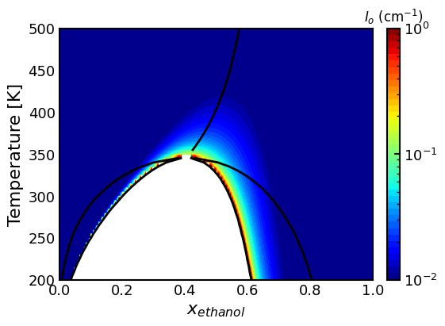
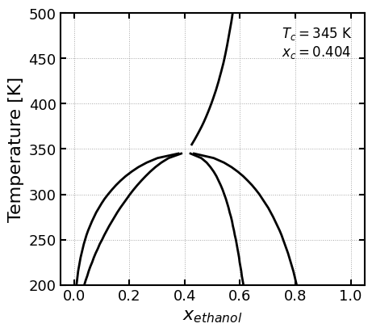

UNIFAC Phase Diagram LLE Calculations¶
run LLE analysis for predictive UNIFAC
[1]:
import numpy as np
import pandas as pd
from picmol import UNIFACThermoModel, load_molecular_properties, PhaseDiagramPlotter
[2]:
# retreive molecules in database
mol_props = load_molecular_properties('mol_id')
mol_props.head()
[2]:
| mol_name | mol_wt | density | molarity | molar_vol | n_electrons | mol_charge | mol_class | smiles | |
|---|---|---|---|---|---|---|---|---|---|
| mol_id | |||||||||
| ADAAM | ADAAMEH | 692.190 | 0.895 | 1.293 | 773.390 | 390 | 0 | extractant | CCCCC(CC)CN(CC(CC)CCCC)C(=O)CN(CC(CC)CCCC)CC(=... |
| DMDBP | DBP | 312.190 | 0.935 | 2.994 | 333.890 | 182 | 0 | extractant | CCCCN(C)C(=O)C(C(=O)N(C)CCCC)CCCCC |
| THMA | THMA | 438.741 | 0.889 | 2.027 | 493.416 | 246 | 0 | extractant | CCCCCCN(CCCCCC)C(=O)C(C(=O)N(CCCCCC)CCCCCC) |
| DMDBT | DBTD | 438.820 | 0.908 | 2.069 | 483.280 | 246 | 0 | extractant | CCCCN(C)C(=O)C(C(=O)N(C)CCCC)CCCCCCCCCCCCCC |
| DMDOH | DOHE | 482.880 | 0.927 | 1.919 | 520.910 | 270 | 0 | extractant | CCCCCCCCN(C)C(=O)C(C(=O)N(C)CCCCCCCC)CCOCCCCCC |
[3]:
# get molecule names
mol_props.index
[3]:
Index(['ADAAM', 'DMDBP', 'THMA', 'DMDBT', 'DMDOH', 'TEHDG', 'TODGA', 'BUTOL',
'ETHOL', 'HEXOL', 'METOL', 'OCTOL', 'PRPOL', 'TIP4P', 'BENZE', 'CYHEX',
'DECAN', 'NDODE', 'HEPTA', 'HEXAN', 'OCTAN', 'TDECA', 'TOLUE', 'ACENI',
'THF', 'PIPER', 'PYRID', 'CHLOR', 'NITRA', 'PERCL', 'BFTET', 'PFHEX',
'TFSI', 'Li', 'Na', 'K', 'Rb', 'Cs', 'Mg', 'Ca', 'Sr', 'Ba', 'La', 'Ce',
'Pr', 'Nd', 'Sm', 'Eu', 'Gd', 'Tb', 'Dy', 'Ho', 'Er', 'Tm', 'Yb', 'Lu',
'EMIM', 'PMIM', 'BMIM', 'HMIM', 'OMIM', 'DMIM', '[BMIM][BF4]',
'[BMIM][CL]', '[BMIM][NO3]', '[BMIM][PF6]', 'BMIM_TFSI',
'[BMPIP][TFSI]', '[BMPYR][TFSI]', '[BPY][TFSI]', '[EBPIP][TFSI]',
'[EMIM][BF4]', '[EMIM][CL]', '[EMIM][NO3]', '[EMIM][PF6]', 'EMIM_TFSI',
'[EMPIP][TFSI]', '[EMPYR][TFSI]', '[EPY][TFSI]', '[HMIM][BF4]',
'[HMIM][CL]', '[HMIM][NO3]', '[HMIM][PF6]', 'HMIM_TFSI',
'[HMPIP][TFSI]', '[HMPYR][TFSI]', '[HPY][TFSI]', '[OMIM][BF4]',
'[OMIM][CL]', '[OMIM][NO3]', '[OMIM][PF6]', 'OMIM_TFSI',
'[OMPIP][TFSI]', '[OMPYR][TFSI]', '[OPY][TFSI]'],
dtype='object', name='mol_id')
[4]:
# specify each molecule in binary mixture
solute = 'ethol'
solvent = 'hepta'
# get molecules as they appear in dataset
mols = [solute.upper() ,solvent.upper()]
[5]:
smiles = mol_props.loc[mols, 'smiles'].tolist()
[6]:
# initialize Unifac-thermo-model
unif_model = UNIFACThermoModel(
smiles=smiles, mol_names=['ethanol', 'heptane'], solute_idx=0,
Tmin=200, Tmax=500, dT=5
)
[7]:
# run temperature scaling, thermodynamic model
unif_model.run()
[8]:
print('Critical point: ')
print(f'T_c: {unif_model.Tc:.0f} K')
print(f'x_c: {unif_model.xc:.3f} {unif_model.solute_name.lower()}')
print(f'phi_c: {unif_model.phic:.3f} {unif_model.solute_name.lower()}')
Critical point:
T_c: 345 K
x_c: 0.404 ethanol
phi_c: 0.223 ethanol
[9]:
plotter = PhaseDiagramPlotter(unif_model)
[10]:
# selected Temperatures to show how Gmix changes as T < Tc for a UCST
plotter.binary_gmix_selectpts(basis='mol', show_fig=True)

[11]:
# SAXS Io calculation with widom linewith overlayed phase diagram
plotter.binary_phase_diagram_I0_heatmap_widomline(basis='mol', show_fig=True)

[12]:
# labeled phase diagram with widom line
plotter.binary_phase_diagram_widomline(basis='mol', show_fig=True)

[ ]: